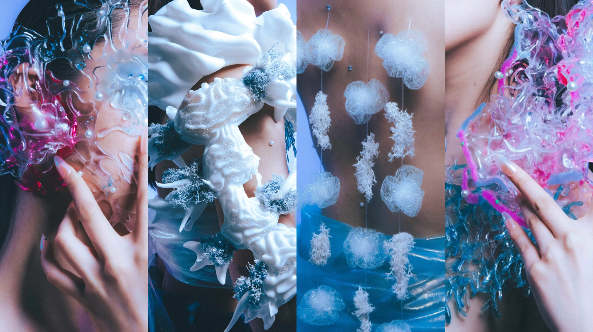
SPECULATIVE DESIGN · 2024
Organisms Utopia
What might an underwater world look like when life is designed around exchange rather than control?
Organisms Utopia imagines a future ecology where fictional organisms communicate through material, cellular, and environmental relationships.
- Role
- Interaction & Industrial Designer
- Scope
- Speculative Ecosystem
- Team
- Cross-disciplinary Team
Concept
Design an ecology where communication is shared across living systems.
The habitat is treated as an interface: organisms exchange signals, adapt to one another, and form relationships through the conditions around them. The concept shifts the focus from human control to ecological interdependence.
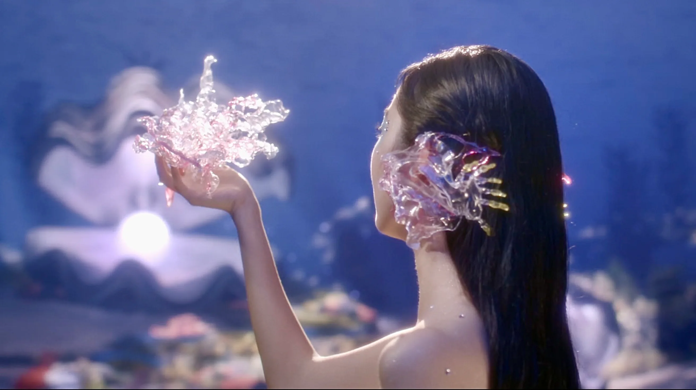
Design Process
Move from a fictional organism to a world that can be handled.
The process moves from drawing, to digital form, to physical behaviour. Each step tests how the speculative story can become tangible without losing its ambiguity.
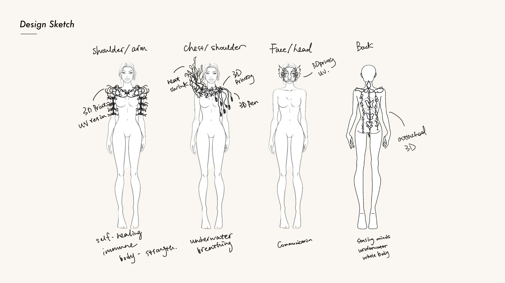
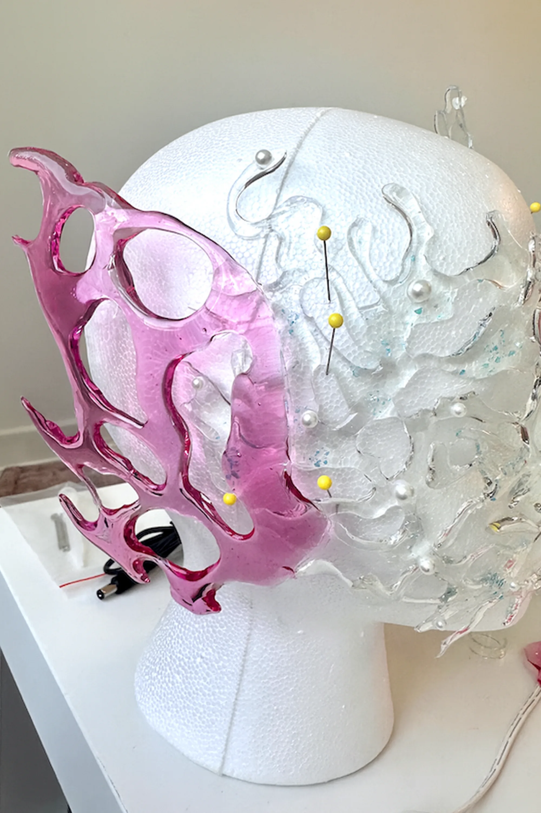
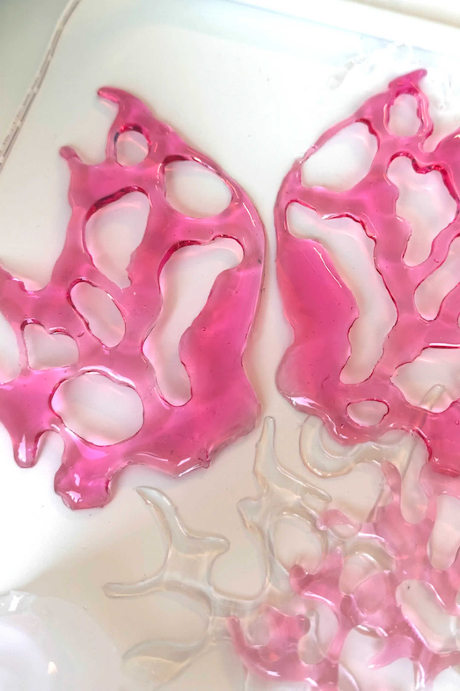
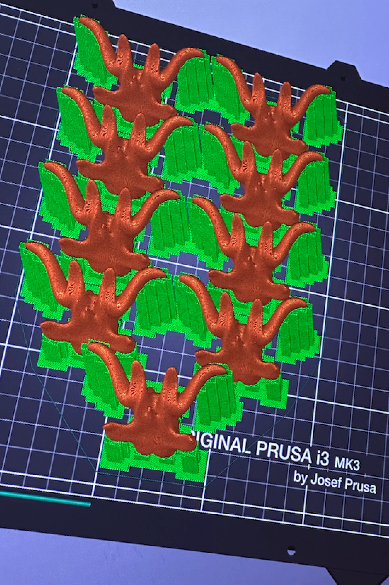
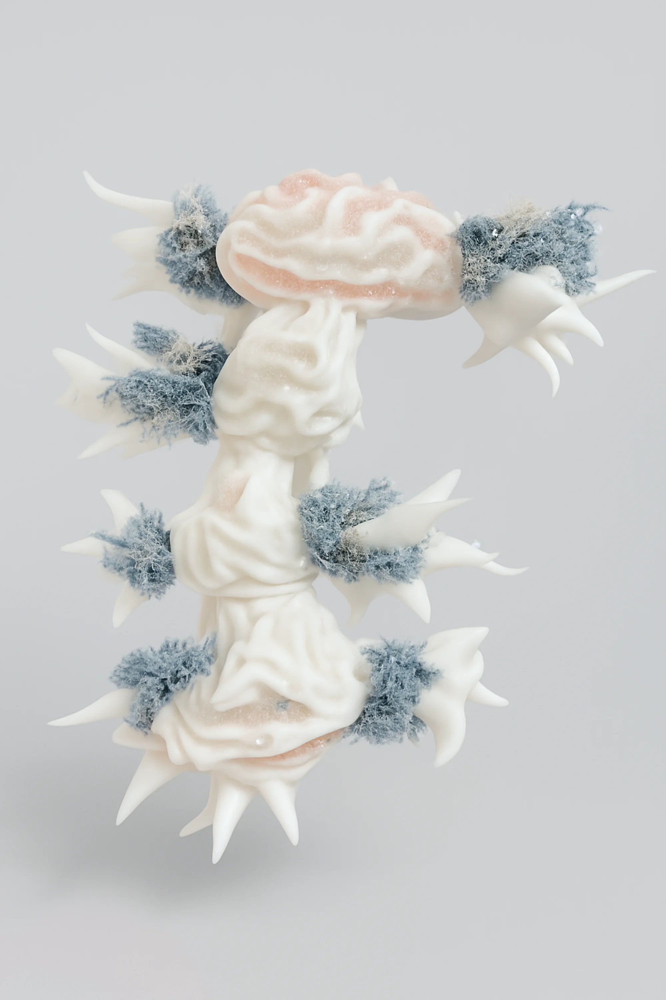
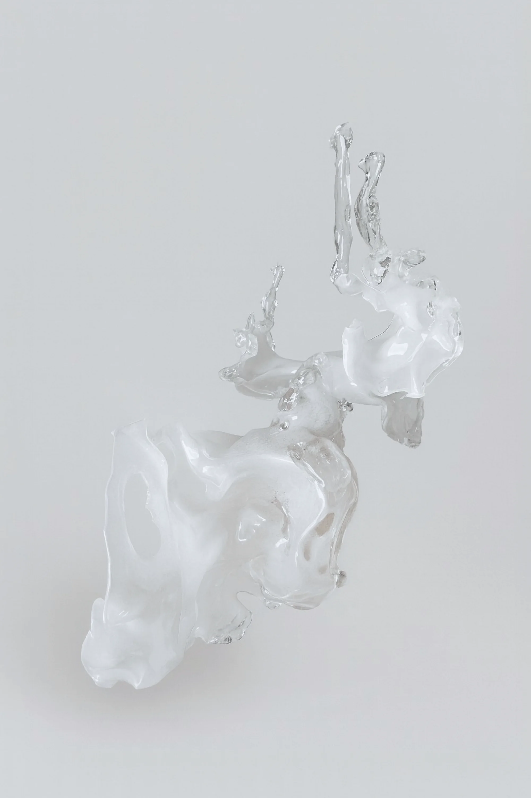
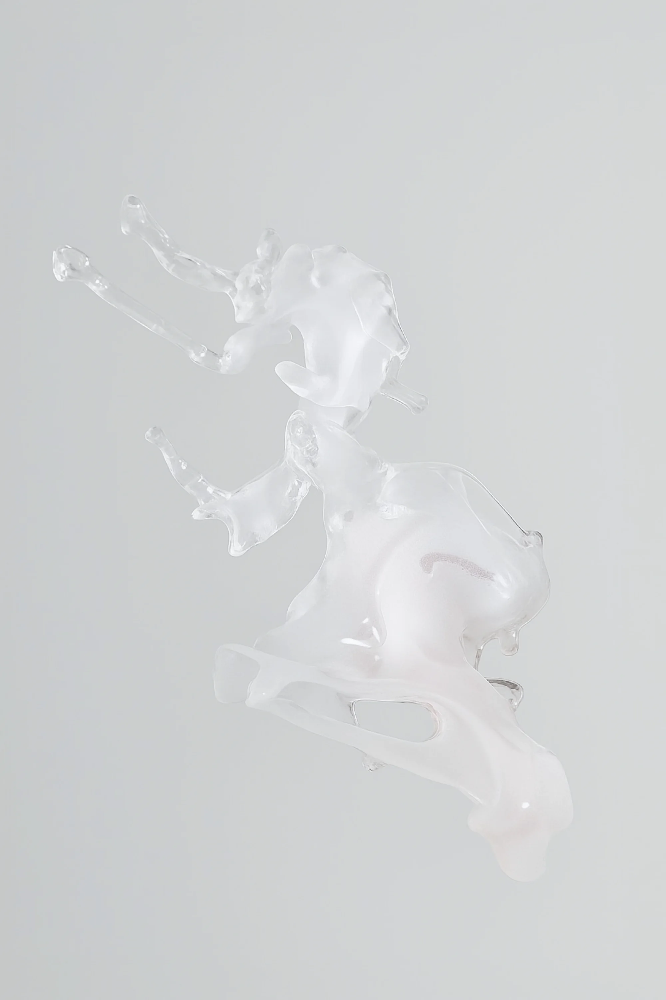
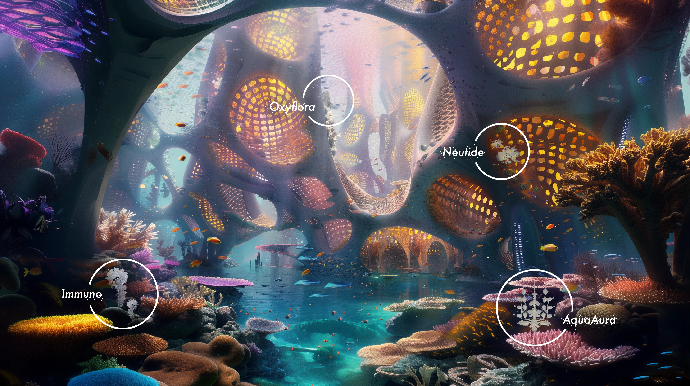
Interdisciplinary Anchors
Use science and philosophy as generative constraints.
Cellular signalling became a reference for biosemiotic exchange, while ecological interdependence offered a framework beyond anthropocentrism. These anchors turned an imagined future into material and behavioural questions.
SCIENTIFIC REFERENCE
Cellular signalling as the basis of biosemiotic exchange.
PHILOSOPHICAL FRAMEWORK
Ecological interdependence beyond anthropocentrism.
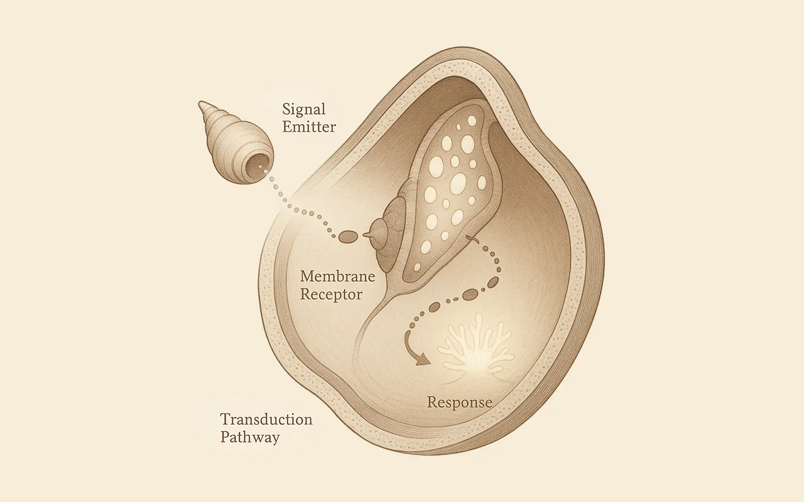
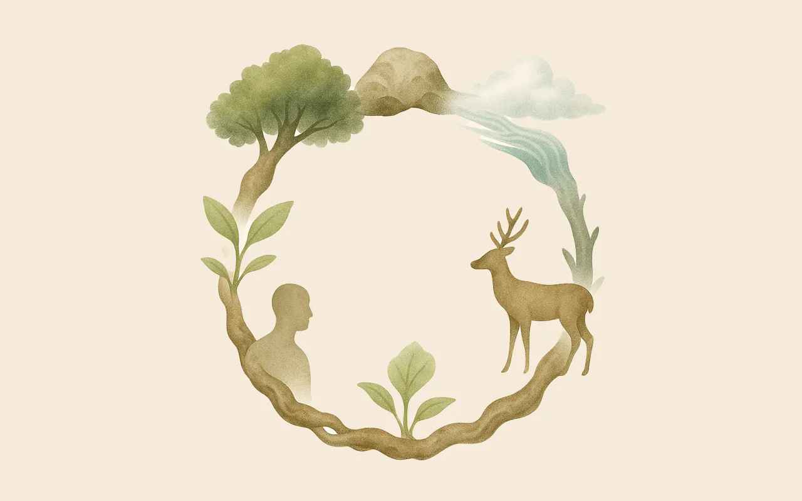
Final Outcome
Four organisms make a speculative ecology visible.
Aquaaura, Immuno, Neutide, and Oxyflora become distinct characters within one interdependent system. Their final forms suggest that difference is not separation, but a condition for exchange.
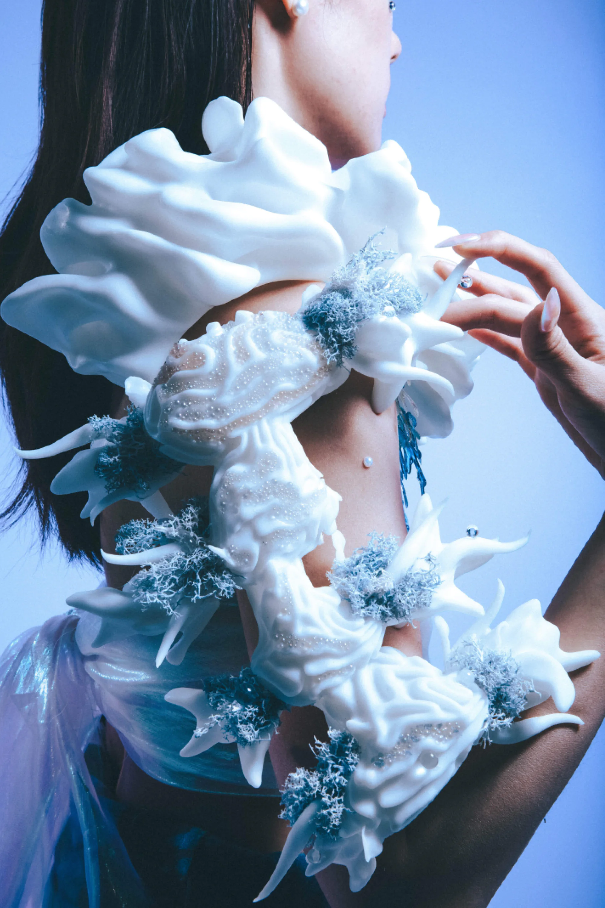
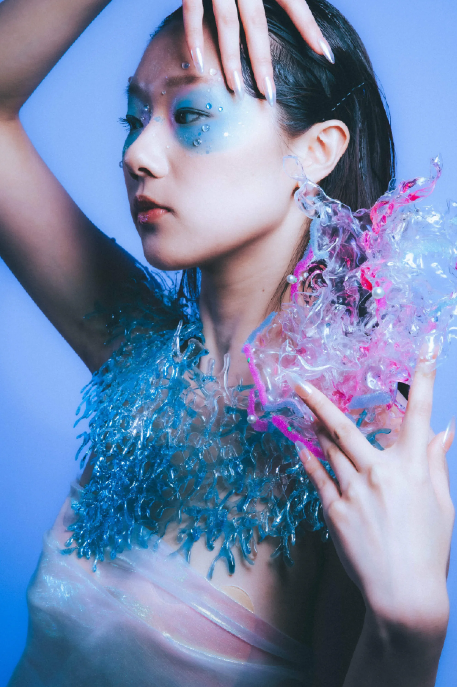
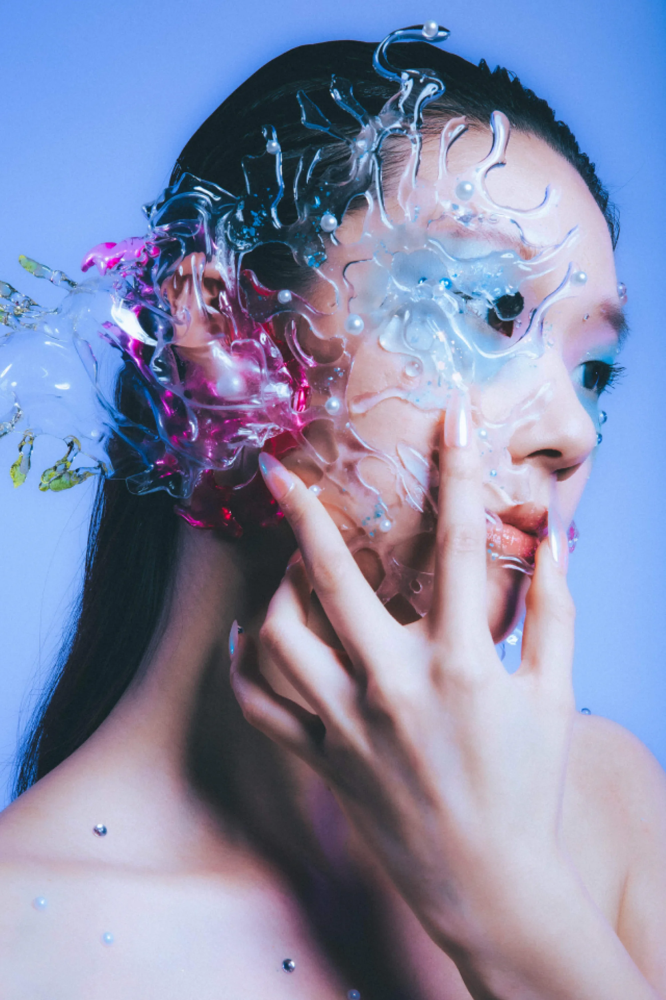
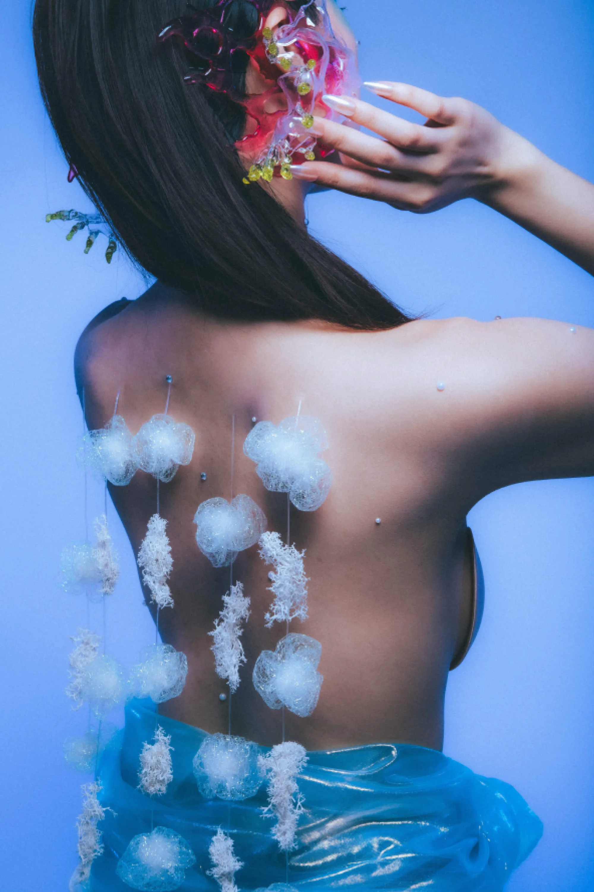
Thoughts
Speculation is useful when it changes how we relate to the present.
Fictional life becomes a way to question who gets to communicate, who defines a healthy system, and what design can learn from relationships that are not centred on people.